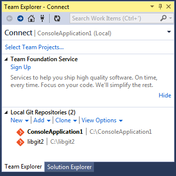
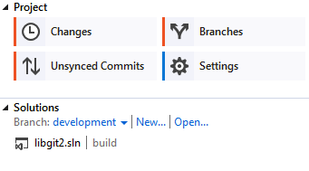

A.2 Git in Visual Studio
Git in Visual Studio
Starting with Visual Studio 2013 Update 1, Visual Studio users have a Git client built directly into their IDE. Visual Studio has had source-control integration features for quite some time, but they were oriented towards centralized, file-locking systems, and Git was not a good match for this workflow. Visual Studio 2013’s Git support has been separated from this older feature, and the result is a much better fit between Studio and Git.
To locate the feature, open a project that’s controlled by Git (or just git init an existing project), and select View > Team Explorer from the menu.
You’ll see the "Connect" view, which looks a bit like this:

図 157. Connecting to a Git repository from Team Explorer
Visual Studio remembers all of the projects you’ve opened that are Git-controlled, and they’re available in the list at the bottom. If you don’t see the one you want there, click the "Add" link and type in the path to the working directory. Double clicking on one of the local Git repositories leads you to the Home view, which looks like The "Home" view for a Git repository in Visual Studio. This is a hub for performing Git actions; when you’re writing code, you’ll probably spend most of your time in the "Changes" view, but when it comes time to pull down changes made by your teammates, you’ll use the "Unsynced Commits" and "Branches" views.

図 158. The "Home" view for a Git repository in Visual Studio
Visual Studio now has a powerful task-focused UI for Git. It includes a linear history view, a diff viewer, remote commands, and many other capabilities. For more on using Git within Visual Studio go to: https://docs.microsoft.com/en-us/azure/devops/repos/git/command-prompt?view=azure-devops.